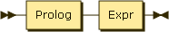
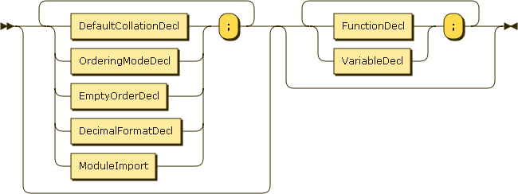
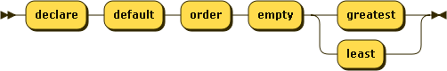
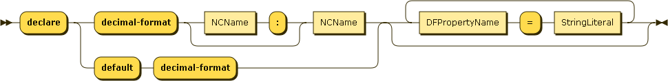
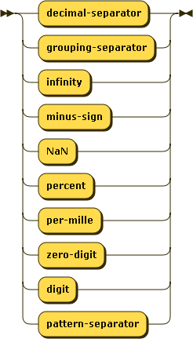

This section introduces prologs, which allows declaring functions and global variables that can then be used in the main query. A prolog also allows setting some default behaviour.

Figure 6.1. MainModule

Figure 6.2. Prolog
The prolog appears before the main query and is optional. It can contain setters and module imports, followed by function and variable declarations.
Module imports are explained in the next chapter.
6.1. Setters.
Figure 6.3. Setter
Setters allow to specify a default behaviour for various aspects of the language.
6.1.1. Default collation
Figure 6.4. DefaultCollationDecl
This specifies the default collation used for grouping and ordering clauses in FLWOR expressions. It can be overriden with a collation directive in these clauses.
6.1.2. Default ordering mode
Figure 6.5. OrderingModeDecl
This specifies the default behaviour of from clauses, i.e., if they bind tuples in the order in which items occur in the binding sequence. It can be overriden with ordered and unordered expressions.
6.1.3. Default ordering behaviour for empty sequences

Figure 6.6. EmptyOrderDecl
This specifies whether empty sequences come first or last in an ordering clause. It can be overriden by the corresponding directives in such clauses.
6.1.4. Default decimal format

Figure 6.7. DecimalFormatDecl

Figure 6.8. DFPropertyName
This specifies a default decimal format for the builtin function format-number().